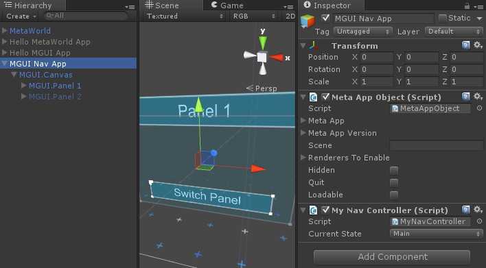
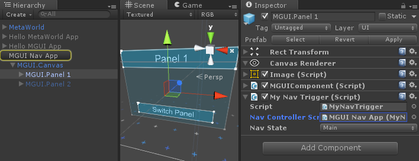
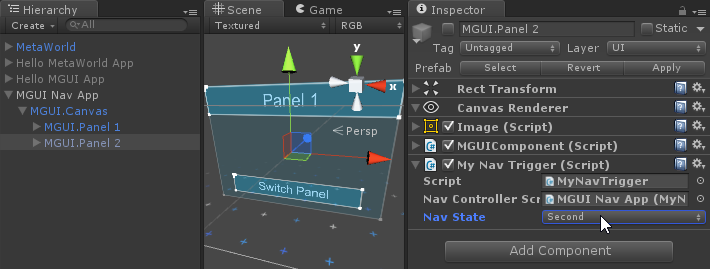
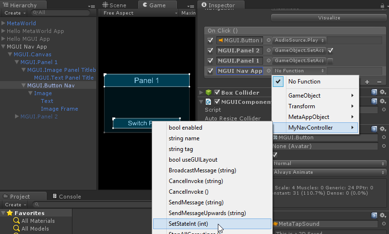
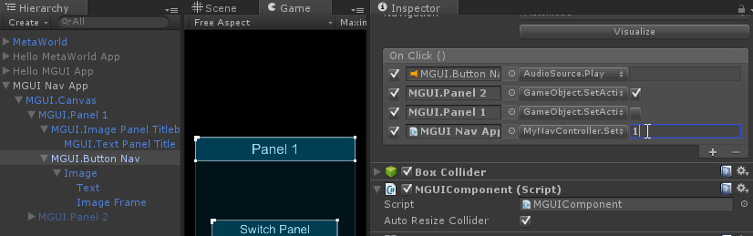
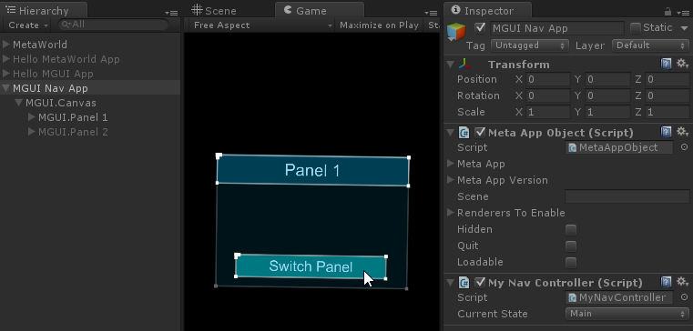

Writing a MetaAppObject nav script
Advanced navigation with states
Overview
This guide will show you how to use an object controller script to keep track of the current navigational state of your App.
By the end of this guide, you will be able to:
- Add an object controller script to your App object
- Keep track of the current navigational state of your App
Requirements
This tutorial also assumes that you have already completed the following:
Steps
Setting up
- Plug in and set up your Meta glasses
- Run Unity
- Open the 'Meta' project
- Open your 'Hello MetaWorld' scene
Adding a controller script to MGUI Nav App
- Select your 'MGUI Nav App' GameObject
- Add a new C# script called 'MyNavController' to 'MGUI Nav App' GameObject
- Click Add Component at the bottom of the Inspector window
- Select New Script >
- Type in 'MyNavController' with language 'CSharp' and click 'Create and Add'
- Open 'MyNavController' for editing by double-clicking the 'MyNavController' Script property in the Inspector window
- Add a
NavigationState enum to keep track of where we are in the navigation hierarchy
- Add the following lines inside the
MyNavController class above the Start () function: public enum NavigationState
{
Main = 0,
Second = 1
}
public NavigationState currentState = NavigationState.Main;
- Add a
SetState() method to set the currentState based on the first parameter
- Add the following lines inside the
MyNavController class above the Start () function: public void SetState(NavigationState state = NavigationState.Main)
{
currentState = state;
}
- Save your changes to the script

MGUI Nav App with the MyNavController script
Method 1: Creating a trigger script and adding it to MGUI.Panel 1 and 2
- This triggers the state change when the panel is activated
- Select the 'MGUI.Panel 1' GameObject
- Expand the 'MGUI Nav App' and 'MGUI.Canvas' GameObjects in the Hierarchy window by clicking the triangles next to the name of each GameObject
- Select the 'MGUI.Panel 1' GameObject
- Add a new C# script called 'MyNavTrigger' to 'MGUI.Panel 1'
- Click Add Component at the bottom of the Inspector window
- Select New Script >
- Type in 'MyNavTrigger' with language 'CSharp' and click 'Create and Add'
- Add a
MyNavController script variable to send the command to and a MyNavController.NavigationState enum veriable to send the new navigation state
- Add the following lines inside the
MyNavTrigger class above the Start () function: public MyNavController navControllerScript;
public MyNavController.NavigationState navState;
- Add an
OnEnable() method to call the SetState() method of 'navControllerScript' when the object is activated
- Add the following lines inside the
MyNavTrigger class above the Start () function: void OnEnable()
{
navControllerScript.SetState(navState);
}
- Save your changes to the script
- Select 'Main' in the 'Nav State' drop down of 'My Nav Trigger (Script)' in the Inspector window
- Click and drag the 'MGUI Nav App' GameObject from the Hierarchy window to the 'Nav Controller Script' property of 'MGUI.Panel 1' in the Inspector window
- Select the 'MGUI.Panel 1' GameObject
- Scroll down in the Inspector window until you see the 'My Nav Trigger (Script)'
- Click and drag the 'MGUI Nav App' GameObject from the Hierarchy window to the 'None (My Nav Controller)' box in the Inspector window

MGUI.Panel 1 with the MyNavTrigger script
- Add the
MyNavTrigger script to 'MGUI.Panel 2'
- Select the 'MGUI.Panel 2' GameObject
- Click Add Component at the bottom of the Inspector window
- Type in
MyNavTrigger and select it from the search results
- Click and drag the 'MGUI Nav App' GameObject from the Hierarchy window to the 'Nav Controller Script' property of 'MGUI.Panel 2' in the Inspector window
- Select 'Second' in the 'Nav State' drop down of 'My Nav Trigger (Script)' in the Inspector window
- Save the scene

MGUI.Panel 2 with the MyNavTrigger script
Method 2: Adding an On Click () trigger to MGUI.Button Nav
- This triggers the state change when the 'Switch Panel' button is pressed
- Add a
SetStateInt() method to set the currentState based on the first parameter (an integer)
- Add the following lines inside the
MyNavController class above the Start () function: public void SetStateInt(int state)
{
currentState = (NavigationState)state;
}
- Select the 'MGUI.Button Nav' child GameObject of 'MGUI.Panel 1'
- Add the 'MGUI Nav App' GameObject to the list of
On Click () event targets in the Inspector window of the 'MGUI.Button Nav' GameObject
- Change the
On Click () event trigger on the 'MGUI.Button Nav' GameObject to call the MyNavController.SetStateInt() function with the parameter 1
- Click the trigger drop-down box ("No Function" by default) next to the 'MGUI Nav App' item in the
On Click () section of the 'MGUI.Button Nav' Inspector window
- Select MyNavController > SetStateInt (int) in the menu

Selecting MyNavController.SetStateInt() as the function to call when pressed
- Type
1 into the input box next to the 'MGUI Nav App' item in On Click ()

Setting the parameter to 0
- Select the 'MGUI.Button Nav' child GameObject of 'MGUI.Panel 2'
- Add the 'MGUI Nav App' GameObject to the list of
On Click () event targets in the Inspector window of the 'MGUI.Button Nav' GameObject
- Change the
On Click () event trigger on the 'MGUI.Button Nav' GameObject to call the MyNavController.SetStateInt() function with the parameter 0
- Save the scene
Observing the change in navigation state
- Unselect the 'Maximize on Play' option in your Game View
- Click on your Game View tab
- Unselect the 'Maximize on Play' option in the top right of the Game View
- Select the 'MGUI Nav App' GameObject so that you can see the 'My Nav Controller (Script)' in the Inspector window
- Click the Play button to run the scene
- Touch the 'Next Panel' button with your finger OR in monocular mode (F2), click on the 'Next Panel' button with your mouse
- You should notice that the 'Current State' property of your 'My Nav Controller (Script)' changes each time you click on the 'Next Panel' button

Current State while running the app
Conclusion
Now you know how to write a controller script for your App object, and have a trigger script attached to a GameObject talk to that controller script. This can be useful if you want to make various events happen based on the current state of the object.
The two methods for calling the controller are just some examples of how that functionality may be possible. The first has the advantage of not needing to worry about how the panel was activated - it will change the state each time the panel becomes active. The second has the advantage of not needing an extra script to call the controller - however, you will need to remember to call the function with the correct parameter for every point of entry to the panel.
These tutorials only cover some of the functionality that the Meta SDK has to offer. Now you have learned the basics and are ready to go and create some amazing AR applications. Good luck!

 1.8.8
1.8.8